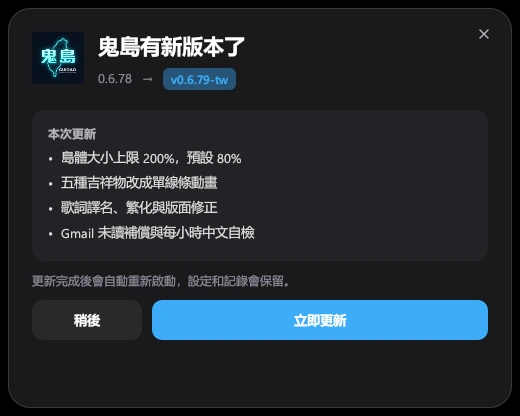

Windows 桌面靈動島 · 台灣繁體版 ｜ 衍生自上游開源專案（MIT）

瀏覽器播放時不再只靠影片標題猜歌。開啟設定「音樂」頁的「聽歌辨識」後，會聆聽電腦正在輸出的聲音，比對線上資料庫取得歌名、歌手與歌曲位置，影片標題是頻道名或分頁名稱時也能認出真正的歌；因為同時知道唱到第幾秒，歌詞能從對應的段落進場。只聽系統輸出，不開麥克風、不收環境音，片段不存檔，可隨時關閉。開發版先行上線實測，正式版待確認穩定後跟進。
KKBOX（桌面版與網頁版）與瀏覽器播放的歌名、歌詞辨識，這批調整正式版與開發版同步推出，兩邊行為一致。目前已能認出來源並還原歌名，但各家網站的標題格式與播放卡登記方式差異很大，部分歌曲的歌詞仍對不上；這部分還在努力修復中，後續會持續調整比對規則。
設定「音樂」→「歌詞顏色」新增「歌詞導唱」開關（外掛式、預設關閉），可與整句漸層各自開關。開啟後，島上當前句與播放器右側歌詞欄的當前句會隨播放進度由左至右逐字亮起：唱過的字走色盤漸層，未唱的字轉暗灰，前緣柔和過渡；暫停停在原位、跳轉直接跟播放位置，長句不再切段。導唱只作用在目前句、不顯示譯文，自動翻譯維持關閉。樣式可選內建，或把 JSON 樣式包放進 %APPDATA%\Kuidao\lyric-karaoke\ 後重新啟動選用。同時強化瀏覽器播 YouTube／YouTube Music 的抓詞：頻道空白時不再直接判定資訊不足，改用清洗後歌名查詢；嚴格時長比對落空後放寬時長再試一輪，歌名與歌手仍嚴格核對；標題清洗新增 1 Hour、Loop、Live、Cover、Full Album、全形斜線與「Song by Artist」等格式。
頂欄的電量圈現在可以點開「電量」頁：手機、藍牙耳機、滑鼠、鍵盤、手把與音箱各佔一個環，環內放對應的線稿圖示、環下是百分比；綠色弧線跟著電量長短變化，低於 20% 整圈轉紅，充電中會在環頂多一顆閃電。系統電池排在最前，桌機沒有系統電池時只列已回報電量的週邊，全都沒有才顯示引導文字。耳機圖示換成頭帶加左右耳罩的線稿；電量頁也能在設定裡個別隱藏，舊設定檔的頁面順序與開關升級後照舊保留。
安裝與解除安裝流程會先主動關閉主程式與啟動器，再等待單一實例鎖釋放；若程序尚未退出，會自動重試，仍無法關閉才提示重新開機。升級時不必先手動從系統匣退出，也能避免檔案被執行中的程序鎖住。
新增獨立監控台，集中呈現鬼島相關程序、命令列、啟動／結束事件、CPU 與記憶體、GitHub 發布狀態、資產下載次數、自檢進度、修復建議、倉庫流量，以及鬼島程序的 TCP 連線；需要完整倉庫流量時可讀取本機 GitHub Token。
啟動器改用 PowerShell 5.1 載入 .NET 的 ZIP 元件逐筆解壓，保留中文檔名，並在寫入前檢查絕對路徑與「..」越界；不再呼叫會在新版 .NET 失效的 Expand-Archive，也不依賴對中文檔名會失敗的 tar。先前路徑檢查字串漏了一個括號，會讓 PowerShell 直接拋錯，已一併修正；下載與 SHA-256 校驗流程不變。
官網與 GitHub Release 的安裝檔現在是同一份重新編譯的檔案；若安裝時仍看到「Installer integrity check has failed」，通常是下載被截斷或拿到舊快取，重新下載 Kuidao-Setup-TW-x64.exe 即可。發布流程會在 CI 以靜默模式安裝、確認啟動器存在後再卸載，避免再把損壞的安裝檔送上線。
LINE 等社群圖示在未讀膠囊裡由 20px 放大到 26px，右下數字徽章半徑由 6 縮到 5；兩位數以上改成短藥丸，不再出現「99+」蓋住圖示、看起來比圖示還大的情況。
原本寫「桌面背景已移除」，容易被理解成程式會移除使用者的桌面。現在改成「背景為深色示意」，只說明示範圖的底色處理，不代表產品功能。
介面輪播第七張換成六頁淡入動畫：音樂、遊戲庫、天氣、日出日落、行程與島上歌詞輪流出現，原本的桌面桌布與藍色底已去掉，只留島體透明邊。下方新增「主題演示」GIF，把經典、奶油、毛玻璃與懸浮漸層的切換收在同一段；GIF 已裁掉多餘黑邊並遮蔽信箱帳號，圖片用 lazy 載入，圓點與自動輪播照舊。
不再只認 Steam 與 Riot：現在一併讀取 Epic 的 manifest、GOG／Ubisoft／EA／Battle.net／Amazon 的卸載登錄資料與安裝資料夾，Riot 仍抓本機捷徑。清單會依來源分組、同名去重，摘要顯示各平台款數；啟動優先用該平台的正式協定，其次才是安裝資料夾裡的主程式。全部只讀本機、不登入、不上傳，重新掃描與清除掃描仍照舊。
常見問題補上更新內容資料庫、清除掃描、固定安裝檔名與遊戲庫支援的八個平台；透明功能卡新增「更新內容」與「本機優先」，遊戲卡改成八個啟動器來源並保留重新／清除掃描，卡片數改為九張。介面輪播改成每 6 秒自動播放，滑鼠移入、鍵盤聚焦或切到背景會暫停，下方可手動暫停；首屏番茄倒數由 25 分鐘改為 5 分鐘。
「關於」頁在版本卡下方新增更新內容資料庫：每次向 GitHub 取得最新 Release 後，整份覆寫本機 update-notes.json，只存一筆版本、內容與時間，不累積上一筆。卡片以綠色「最新一筆」標籤、條列內容與更新時間呈現；連線失敗時保留目前快取，不會長出舊資料。
「重新掃描本機遊戲」與「清除掃描本機遊戲」改成同尺寸 34px 膠囊：左側向量圖示、圓角描邊、hover 平滑變色與按下位移。重新掃描是綠色主要動作；清除是低調紅色描邊，只清空本次掃描結果與數量，不會解除安裝、刪除遊戲或清掉已移除的捷徑清單。沒有掃描結果時自動變灰不可按。
安裝檔不再把版本號塞進檔名，固定為 Kuidao-Setup-TW-x64.exe；官網下載按鈕直接指向 GitHub Release 的固定資產，分享同一個網址即可，不必每次換連結，下方同時標示 SHA-256 方便核對。安裝精靈內的版本資訊仍會顯示目前版本。
原本 18pt 的「鬼島 桌面靈動島」和版本說明畫在同一行，版本字從標題中間長出來，看起來像被切掉。現在標題、版本、啟動器說明分成三層，版本改成獨立的灰色小字，安裝位置與兩個勾選項同步往下移；底部品牌字直接移除，不再頂到視窗底線；版本字底色改跟頁面一致，不會多出一條白色長條。
設定頁原本只寫 LINE、Instagram 等來源，下方卻出現「QQ 系統通知通道可用」；現在標題與說明都列上 QQ，並註明 QQ 走 Windows 系統通知，有訊息時會用 QQ 圖示進入未讀。六個固定社群圖示的排序仍只套用 LINE、手機連結、Threads、Messenger、Facebook、Instagram，QQ 不受這排順序影響。
Steam 遊戲改從收藏庫快取找 32×32 小圖，找不到才退回 600×900 封面、header 或 logo；Riot Client、VALORANT 直接抓執行檔圖示。每一列左側都是那個應用程式自己的圖示，不再是統一的 R／S 字母磚；點圖示本體也能啟動。長按圖示約半秒會出現「移除／取消」，滑過圖示右上角也有小 ×；移除後寫入本機清單，重新掃描不會自己長回來，按「顯示全部」才恢復。Steamworks 共用元件這類工具不再列進遊戲庫。
播放 KKBOX 時會用歌名與歌手在 KKBOX 搜尋，比對歌名、歌手與長度後，透過官方歌詞介面取得歌詞與時間軸，有時間軸就逐句同步，只有純文字也會以「文字歌詞」多行顯示；作詞、作曲、編曲等署名行不會被當成歌詞顯示。瀏覽器播放 YouTube、Spotify 等來源時，原本只查網易雲、QQ 音樂與 LRCLIB，現在查不到也會自動改查 KKBOX；台語歌、老歌與 MV 標題會拆出「歌手 ft. 合唱者 歌名」與中文歌名後再接拼音的各種寫法，比對時放寬 MV 與歌曲的長度差。找不到或取詞失敗時，仍照原本順序往網易雲、QQ 音樂與 LRCLIB 查，不會讓歌詞區整個空白；抓到的歌詞會快取在本機。
沒有系統電池的桌機，電量圈先抓 Windows 已連線手機的電量，手機沒回報才退回藍牙耳機、耳塞與音箱；數字直接畫在電池圈內，左側再依裝置類型放手機或耳機圖示。iPhone 經藍牙低功耗電池服務回報時會顯示實際百分比，同時連手機與耳機則以手機優先；滑鼠、鍵盤等非音訊裝置不會蓋掉電量，完全沒有可回報電量的裝置才自動隱藏。
「介面」輪播的右側通知列不再浮在圖片外的空白處，改成貼著每張島體右緣、直接壓在畫面上；原本截圖左右與底部的 macOS 藍色桌布條已裁掉，圓角外側的桌布殘留也一併清掉，只保留島體本身的漸層與內容。
瀏覽器播放 YouTube／YouTube Music 時，直接從 Windows 右下角播放卡讀取歌名、歌手、封面與進度，不需要安裝擴充功能。YouTube 分頁即使被標成影片、沒有專輯欄位，也會當成音樂顯示；把瀏覽器縮小或切到其他視窗，播放卡的工作階段仍在，島上持續顯示目前歌曲。
瀏覽器回報的標題常把「歌手 - 歌名」「歌名（Official Video）」、頻道名與「- YouTube」混在同一串，過去拿整串去查幾乎對不上。現在抓詞前會先拆掉影片標註、頻道後綴與「- YouTube」，再從標題與頻道組出「歌名＋歌手」候選逐組比對，並要求歌名、歌手與長度相符；英文名與韓文名並列的頻道也會分別嘗試。Spotify 的乾淨資料維持原本路徑，不受影響。
首屏那條島不再固定寫著 14:19:58 與 19°。時間改用瀏覽器本機時鐘，每秒跳一次；氣溫從 Open-Meteo 抓目前溫度並每 10 分鐘重抓，抓不到才保留原數字。番茄專注顯示 05:00 並依實際秒數倒數，歸零後重新開始，畫面不用手動更新。
系統「新增／移除」裡的安裝包不再塞入完整 22MB 主程式，只剩約 1.2MB 的啟動器與卸載資訊。按下完成後會自動跳出品牌下載視窗，查詢 GitHub 最新正式版、顯示下載進度與大小，驗證 SHA-256 後才解壓到安裝資料夾並開啟鬼島。日常從捷徑開啟時，主程式已存在就直接啟動，不會每次重新下載；主程式仍沿用原本的應用內自動更新。
經典、奶油、毛玻璃、懸浮雲與七款懸浮漸層現在都使用同一組以類似原作者方式呈現的台灣石虎影格，漸層只換島體底色，不會另外換一隻吉祥物。原本使用者資料夾只剩說明文字，才會出現「吉祥物不見了」；現在內建影格會自動接手，不必把圖放回資料夾。線條會依實際玻璃與桌面底色選深墨或白線，白線遇到半透明亮底再加一層極淡深色底。
右側歌詞區加寬，當前句原文最多折三行、譯文最多兩行；英文與韓文按單字換行，中文、日文按字換行，不會把英文單字拆成兩半。前後句在空間足夠時仍以淡出的一行保留上下文，長句不會再整句變成「…」；播放控制、進度條與專輯封面位置不變。
特色功能第二張卡原本只有文字，現在補上 LINE、手機連結、Messenger、Threads、Facebook 與 Instagram 六顆圓形圖示，和島上使用的圖示一致；深色主題會加白底，黑色 Threads 圖示不會消失。
展開未讀後，膠囊底部多一顆「全部已讀」。按下去會清掉 LINE、手機連結、Messenger、Threads、Facebook、Instagram 的島上未讀，收起島體，不會開啟任何程式；健康提醒不會被誤清。
手機連結的圖示改成透明底，只留筆電與手機本體，不再帶著一塊淡白圓形背景；在綠色、深色與淺色主題上都直接貼合島體。
讀取 Steam 登錄檔與 libraryfolders.vdf，列出各收藏庫已安裝的遊戲、最後遊玩與容量；同一路徑大小寫不同不再重複計算。Riot 端固定列出 Riot Client、英雄聯盟、聯盟戰棋與 VALORANT，按下啟動會走 Steam 或 Riot 的正式協定。只在使用者打開頁面或按重新掃描時讀 manifest，不在背景登入、不上傳收藏庫，也不定時輪詢。
官網「介面」區的展開畫面新增第八張遊戲庫，Riot 四項與可滾動的 Steam 清單直接入鏡；右側通知列數字一樣在 10–50 間跟著切換。特色功能新增「本機遊戲庫」、「更新內容」與「本機優先」卡，現在共九張，說明只讀本機資料、啟動方式、單筆更新內容與隱私邊界。
「介面」區多一組實機畫面：天氣、音樂、島上歌詞、番茄專注、剪貼簿、待辦清單、行程與遊戲庫，支援滑鼠拖曳、觸控滑動、鍵盤方向鍵與圓點切換，現在也會每 6 秒自動輪播；滑鼠移入、鍵盤聚焦或分頁切到背景時暫停。畫面旁同步亮起 Gmail、LINE、手機連結與系統通知四顆圓形圖示，未讀數字在 10–50 之間跟著畫面更換，切換時依序彈出。
首頁主視覺的深色膠囊改成圖二的排列：左起綠圈電量、下午時間、雲加太陽與氣溫、AI 圓環、番茄、紅色倒數、四格訊號，最後是白色線稿石虎與音符。手機版隱藏訊號並縮小石虎，實際 390px 寬度沒有水平溢位；深色主題也改成同一套黑底白光，不再被青綠漸層蓋掉。
以前第一次開啟吉祥物資料夾會自動放入十六張幾乎相同的待機圖，看起來像動畫不會換。現在只建立資料夾與說明，所有主題直接使用程式內建的台灣石虎影格（採類似原作者的呈現方式），懸浮漸層也不例外；外掛包仍可自己上傳影格覆蓋。舊範例已移到備份資料夾，沒有刪除。
以前點 LINE 只會把主視窗叫到前面，現在會先讀通知中心裡的原始 launch：LINE 的 line:// 會直接開到台新銀行那則對話，Messenger、Facebook、Threads、Instagram 與手機連結也比照同一套。沒有深層連結或協定失效時，才退回開啟原生程式，最後才開官網。
不再只算啟動後新跳出的通知。第一次讀取 Windows 通知中心時，會把還留在裡面的社群通知計入島上未讀，並記住最新一則的深層連結；瀏覽器送進通知中心的網站通知則用標題判斷來源，例如 Threads 的愛心或私訊、Instagram 訊息，點下去也能開到對應內容。同一輪即時通知會先扣掉，避免重複計算。
LINE、手機連結、Threads、Messenger、Facebook、Instagram 全部固定 20×20 圓形裁切，通知數字用同一顆小白圓、同字級畫在右下角；手機連結與 LINE 並排第一列，超過三個未讀自動往下刷，滑鼠移進膠囊就停住可手動滾輪。設定頁的標籤可左右拖曳，越左邊越先出現在島上。
設定頁不再列出柴犬、貓、哈士奇與黃金獵犬，只保留島虎；舊設定選過其他形象，啟動時也會自動回到島虎，避免切換後每一隻看起來都一樣。
自動翻譯遇到 Google 舊端點回 429 就靜默失敗，畫面只剩原文；現在改用可批次翻譯的端點，一次送出整段再按換行拆回逐行對齊。島上歌詞與音樂頁都改成原文一行、譯文小字放在正下方，不再用譯文取代原文；中文歌維持只轉繁體。
Gmail、Yahoo、iCloud 與通用信箱改成跟社群通知同一套平面圓形圖示：512px 畫布、448px 內容圓、透明背景，不再混用亮面立體、白底與粗細不一的舊圖示。設定頁帳號列、島體邊緣未讀通知與官網「信箱與驗證碼」功能卡都同步換成這組；小鈴鐺與未讀數字的位置不變。
官網左上角與頁尾原本是程式畫出來的漸層方塊，現在換成鬼島真正的紫底黑島圖示，並補上瀏覽器頁籤與分享預覽圖；圖示比例與圓角維持原本尺寸，載入後不再出現空白方塊。
首頁「介面」區的信箱小卡換成新版未讀列表，寄件者與主旨都先上馬賽克；舊圖中的驗證碼與信箱地址不再出現。
大小滑桿上限由 140% 提高到 200%，預設與「恢復預設」都是建議的 80%。文字輸入與拖曳改為變更當下就套用，輸入 80、120 或 200 都會停在自己選的數值，不再在放開滑鼠前跳回最大值；只縮放島體，字與圖示仍保持清晰。
Gmail 不再只等單封新信事件：改用 UNSEEN 未讀數補償，IDLE 斷線或信件解析失敗時仍會點亮島上鈴鐺，八秒內不重複通知。歌詞翻譯只送非空行並保留原行對齊，空行不會再讓整首翻譯失敗；譯文統一轉繁體，順手清掉漢字間多餘空格、重複標點與行首殘留逗號。倉庫新增每小時中文自檢，會自動修台灣用語與重複助詞，有修正就提版本、提交並觸發編譯發布，鬼島可直接從更新檢查取得。
設定「外觀 → 懸浮漸層」新增 60–100% 亮度滑桿，預設 80%；只壓暗漸層底色，不改文字與圖示。漸層皮膚的頂欄日期改成近白字並加一層淡影，不再被亮色底吃掉；日期區域懸停時只出現細把手，不再鋪一塊白底。
社群圖示會記住實際發出通知的 Windows AppID，點下去優先喚起 LINE、Messenger、Threads、Instagram、Facebook 的原生程式或已安裝的桌面版；LINE 另外會還原被最小化或收進系統匣的主視窗並切到前景。只有找不到 AppID 或系統拒絕喚起時，才退回原本的官方網站。LINE 的 PC 版沒有第三方指定聊天室的介面，因此會停在 LINE 主視窗的聊天列表，不會直接跳到某位好友的對話。
部分華語歌在 Spotify 會顯示英文譯名與縮短藝名（例如 No Reason／永彬），和網易雲的中文原名對不上而只顯示歌名。現在查不到時會先用 Shazam 所走的 Apple 目錄還原正式歌名與完整藝名，再拿這個名字抓同步歌詞；比對時要求歌手可辨識、長度幾乎相同且全場僅一個候選。舊版誤記的「近期無歌詞」快取也會失效一次，重新查詢。
歌詞沿用自動搜尋（本機歌詞 → 網易雲 → QQ 音樂 → LRCLIB）；中文歌詞在顯示時一律轉成繁體、採台灣寫法（內建繁簡對照表，不改動原始歌詞檔）。設定新增「自動翻譯歌詞」：非中文歌詞（英、日、韓等）保留原文，譯文以小字顯示在原文正下方，中文歌不翻；譯文快取在本機，同一首歌不重複送翻，離線或失敗時照常顯示原文。
島體示意預設只露出一半，點一下或再點一下切換展開與收起；取得方式與授權一併改為「首發前，暫不開放」的官方說法；頁面不再出現任何指向原始碼倉庫的網址，改以專案識別碼代替，避免被從連結回推倉庫位置。
版本標籤帶台灣版後綴時，舊版解析會判定格式異常；改為只取數字段後可正常比對，有新版本才會提示下載。
介紹頁新增「實際樣子」區塊：音樂播放、漸層主題、訊息三個卡片；素材統一套成 640×64 透明畫布，去掉桌面底色與深色邊框，訊息卡改用五個 App 圖示。
每個形象有自己的動畫來源，不再拿原始版表情序列來跑；石虎改用依原稿製作的待機動畫，身體固定、尾巴擺動與眨眼。設定可開啟外掛資料夾，放入自製的 pack.json 與影格 PNG 後重新載入即可替換。
啟動後先向來源確認版本，發現新版就直接在程式內取得最新資源包，抓完自動替換並重新啟動；不再需要使用者按「下載並安裝」，也不再導向備援或瀏覽器下載頁。
島上系統鍵盤列新增 Num Lock 狀態：按 NUM 鍵切換時，HUD 立即顯示數字鍵盤圖示，開啟為綠、關閉為灰，並在右側文字標出已開啟或已關閉。
漸層底色原本沿用灰階字，對比不足、字看起來過暗；改用漸層時島上文字統一切到高亮白，通知、未讀、詳情、信件與歌詞列一起套用。
有新信件時鈴鐺不再自動收起，右上角紅底白字直接顯示未讀封數；進入信箱頁後計數歸零，之後再進新信才重新累加。
Threads、Messenger、Facebook、LINE、Instagram 的通知會分別累計，圖示右上顯示目前有幾則，超過 99 顯示 99+；點圖示可清零並開啟發出通知的桌面程式，沒有可用 AppID 才開對應網站。
同步時比對台灣版現況：沒改過的原始檔照收上游新版，改過的（吉祥物、設定頁、更新來源等）一律保留，上游同檔新內容另存供比對；同時修好清單檔被版本號覆寫導致無法啟動的問題。
後台每 6 小時檢查上游初始檔案，繁中化後自動編譯並發布；程式啟動向本倉庫查最新版，確認後才下載替換。台灣版自身改動同樣走此流程出包，官網同步補上說明。
正式版與開發板兩支 exe，圖示各自內嵌，管理員權限啟動，介面全繁體台灣用語。
目前為首發準備階段，對外不下載、不發放授權；首發名額由維護者邀請，正式開放時另行公告，屆時才提供授權方式與檔案雜湊。
定時檢查上游原始碼，自動繁中化、台灣用語調整、品牌改名、版本對齊後編譯發布。
原始作者自首次開源一路推進的過程，依功能域歸納，不列版本號。
首次開源並附使用指南；建立安裝包與發佈包、應用內更新、開機自啟、捷徑目標路徑與舊版覆蓋升級流程，同步修掉 CI 抓取安裝程式與更新快取替換的問題。
接上系統媒體資訊：播放／暫停、切歌、獨立音量、進度跳轉；陸續適配網易雲、酷狗、波點、酷我、Apple Music、汽水，處理大歌單補齊時長、歌詞按歌曲身份切換、合唱曲目與少數民族語歌詞排版。
從豆包起步，陸續接入 Kimi、Claude、Gemini、Grok、DeepSeek、GLM、ZCode、Kiro 與中轉站餘額；加入額度環、常駐欄數字、按需啟停背景執行緒與錯誤提示。
微信、QQ 提醒先行，接著接入飛書、釘釘、企業微信，統一任務欄提醒與帳號歸屬判定，修掉白屏、隱藏圖示辨識、退出清理與延遲通知歸錯人。
當地實況、四日到七日預報、日出日落、多城市切換、日照軌跡視圖；新增和風天氣來源與憑據保護，常駐欄時鐘旁顯示溫度。
皮膚、停靠形態、橫線模式、極簡劉海、側邊常駐；拖曳加入拿起、跟手、吸附與落位動效，頂欄避讓、OLED 像素偏移、系統不支援模糊時改用半透明底。
相容渲染改為 Direct3D 12 優先、失敗退 Vulkan、再退 OpenGL；分層視窗消除邊緣鋸齒，核顯降低記憶體占用，閒置不再被截圖流程帶到滿幀，CPU 約降四成。
側欄一項一頁、功能卡片統一、長表單收進彈出視窗；頁面開關改為模組總開關，記住視窗位置與大小。
全屏判定改看客戶區是否蓋滿整屏，修掉遊戲與建模軟體裡反覆彈出；另處理郵件驗證碼（含繁中與純字母）、日曆自簽憑證、代理下請求失敗、更新檢查限流等問題。
覆蓋安裝會沿用原本的安裝位置，不再重複裝到預設資料夾；更新包若含異常路徑會直接拒絕，避免把程式放到錯誤位置。移除程式仍可從「設定 → 應用程式」或「新增或移除程式」完成。
島體停在螢幕頂端、又剛好壓到瀏覽器或其他應用的標題列時，關閉、最小化與最大化只會點到島體。現在最上方標題列範圍會自動讓點擊穿透到下面的視窗，島體面板本身仍可操作；不必先移動島體或關閉程式，就能正常關閉視窗。
首屏副標改成單一版本，行動版不再重複同一段文字，窄螢幕也不會留下單字孤行；倉庫內殘留的舊打包流程已移除，自動建置只上傳程式成品，對外仍以安裝檔為唯一入口。
站點改採安裝版定位與初始版本用語，首頁、下載區與 FAQ 改稱安裝包的第一個版本；全站卡片與更新總覽卡片改為半透明，並統一補上可從「新增或移除程式」解除安裝的說明。全名加上英文 Kuidao Desktop Dynamic Island，主題演示下方註明畫面時間會依系統時間變動。
官網介面第七張不再是一張靜態行程圖，改成音樂、遊戲庫、天氣、日出日落、行程與島上歌詞六頁淡入；截圖的桌面與藍底已去掉，只留透明島體。下方加入主題演示 GIF，集中看經典、奶油、毛玻璃與漸層切換；GIF 裁掉多餘黑邊並遮蔽信箱帳號，lazy 載入不拖慢首屏。
原本只掃 Steam 收藏庫與 Riot 捷徑，現在加入 Epic manifest，以及 GOG、Ubisoft、EA、Battle.net、Amazon 的卸載登錄與安裝資料夾。清單依來源排序、同名去重，摘要顯示各平台款數；啟動先走平台協定，沒有協定才執行安裝資料夾主程式。仍只讀本機，不登入、不上傳。
常見問題補上更新內容資料庫、清除掃描、固定安裝檔名與遊戲庫支援的八個平台；透明功能卡新增「更新內容」與「本機優先」，遊戲卡改成八個啟動器來源並保留重新／清除掃描，卡片數改為九張。介面輪播每 6 秒自動播放，滑鼠移入、鍵盤聚焦或切到背景暫停，下方可手動暫停；首屏番茄倒數改為 5 分鐘。
每次取得最新 Release 後整份覆寫本機唯一一筆紀錄，只保留版本、內容與更新時間，不累積上一筆；連線失敗時保留目前快取。卡片放在版本資訊下方，可直接看最新更新內容。
設定頁的遊戲卡換成兩顆同尺寸膠囊按鈕：重新掃描是綠色主要動作，清除是低調紅色描邊。兩顆都有向量圖示、平滑 hover 與按下位移；清除只清空本次掃描結果與數量，不會解除安裝、刪除遊戲或清掉已移除的捷徑清單。
Steam 改讀收藏庫快取圖示，Riot 抓執行檔圖示；列首不再全部是字母磚。長按圖示半秒出現「移除／取消」，右上角也有小 ×；移除清單存本機，重新掃描不恢復，按右上「顯示全部」才回來。Steamworks 共用元件不再列出。
KKBOX 播放時自動用歌名與歌手搜尋，比對長度後抓官方逐句歌詞；瀏覽器 YouTube、Spotify 查不到原本來源時也會改查 KKBOX。台語歌與 MV 標題會拆出合唱署名、中文歌名與英文拼音再比對，作詞作曲不列入歌詞行。抓不到時照原順序往網易雲、QQ 音樂與 LRCLIB，歌詞快取在本機。
更新檢查原本一天只看一次，剛發布的版本要等很久才跳提示；改成每次啟動先確認一次、之後每兩小時再確認，一有新版就顯示最新的更新說明與資源包。按「下載並安裝」會一併換掉程式與 assets，設定和紀錄保留，不需要另外下載檔案。
可直接在程式內檢查更新取得這一版。歌詞照舊自動查詞，中文歌一律轉繁體（台灣寫法）顯示；設定「播放控制與同步歌詞」多一個「自動翻譯歌詞」開關，非中文歌詞會依原意翻成繁中，中文歌不翻。翻譯在背景完成、譯文快取本機，離線或翻譯失敗時照常顯示原文，播放不受影響。
只有幾個字的短句（例如「我們都一樣」）原本字數不到門檻，會被當成外語歌送去翻譯；判定改為看漢字佔比後，短句中文歌也正確判成中文，只做繁體化、不送翻譯。
首頁不再放更新資訊，只留核心功能、台灣版在地化做了什麼、上游開源授權與下載入口；設定頁配色與主題說明維持原樣。更新紀錄仍在倉庫內的更新總覽頁，不再對外提供。
島上顯示框只有 48×30，原本細線縮下去幾乎消失，看起來只剩兩道白弧擋在漸層上。現在改為先縮到顯示框再加粗線條，動物本體放到接近滿版高度，並加大上下彈跳、呼吸縮放與左右擺頭，五隻形象同步重出圖集；縮到劉海大小也能認出是動物，待機時看得到在呼吸擺動，掃視與探看也不再像原地發呆。
更新腳本改成台灣版的路徑與檔名（暫存目錄、程式名、解除安裝機碼都對齊鬼島），並補上吉祥物圖集等 assets 一起換新，不再只換 exe。做法：設定頁按「檢查更新」，程式會抓發佈包、比對大小與 SHA-256、關閉自己後換檔並自動重開；安裝版也能直接套用，不必再手動重新封裝。
線條版吉祥物的左右掃視三格（09 掃視、10 探看、11 尋找）原本縮到島內後只位移約 7 像素，看起來像原地發呆；現在把每幀的左右擺幅加大到 10 像素以上，五隻形象同步更新，縮到劉海大小也看得出在左右張望。
懸浮風格多了一整組漸層島體：懸浮·紫霞（深紫→洋紅→桃紅）、懸浮·深海（淺藍→深藍）、懸浮·霓虹（綠黃→橙→紫）、懸浮·夕陽（紅→橘→金）、懸浮·糖粉（紫→粉→洋紅）、懸浮·藍紫（藍→紫→洋紅）、懸浮·碧野（藍→綠→黃）。放在「外觀 → 島體外觀 → 懸浮漸層」一行，與既有主題同一組設定；島上文字與圖示維持白字，縮到劉海大小仍看得清，設定頁本身的配色照樣跟著作業系統跑。
五隻形象全部換成純白線條描繪的全身動作：石虎、柴犬、貓、哈士奇、黃金獵犬各自有自己的動作序列，犬類為待機、招手、被摸、跳躍、走路、吃東西、找電線杆、睡覺，貓科另有洗臉、伸懶腰、打哈欠、磨爪；切換形象就換整套動作，淺色主題會自動轉成深線。
「外觀 → 主題」不再列出勤務誌·紙藍、勤務誌·印章、勤務誌·夜三款；原本停在這些配色的設定會自動回到經典，島體外觀只剩經典、奶油、毛玻璃·淺、毛玻璃·深、懸浮雲與七款懸浮漸層。
天氣地點不再帶有上層行政名稱，一律以「台灣 · 某某市 · 某某區」顯示，搜尋與顯示同步。
切換貓、哈士奇、黃金獵犬時改用各自的圖集，不再一律播放石虎的表情；連帶修掉因此造成的建置失敗。
更新總覽改成跟勤務日誌一樣的分類寫法：每筆異動標上「新增／更新／修正／移除／異動」，上方可按標籤篩選，只看某一類做了什麼；仍不標版本號。
README、使用說明、參與開發與安全性原則改寫為繁體中文；移除上游作者、贊助與大陸渠道資訊，僅依 MIT 要求保留一行致原作者致謝。
軟體顯示名統一為「鬼島 桌面靈動島（Kuidao）」，版本資源、關於頁、安裝器與官網同步更新；安裝檔改用英文檔名 GuiDao-DynamicIsland-Setup，避免郵件與防毒誤判。
官網不再出在任何 AI 生成標記，額度功能描述也撤掉豆包一詞；站內圖片本身無浮水印像素（邊緣全透明），顯示端若有角標屬平台疊加、不在檔案內。
設定「外觀」新增吉祥物形象選單，預設島虎（石虎）；柴犬已補齊十二組表情動畫並可切換，貓、哈士奇、黃金獵犬待動畫完成後再開放。
下載頁移除開發板卡片，改為單一安裝檔入口，並標明系統級安裝與程式清單可移除；首屏按鈕文案同步調整。
網易雲、酷狗、汽水、酷我、波點、QQ 音樂不再自動上島；程式、歌詞與控制邏輯完整保留，改一個開關即可恢復。Spotify、Apple Music 與瀏覽器照常。
修正查詢後綴只認簡體的問題，輸入「士林區」「內湖區」「北投區」都查得到，可把區加入城市清單；都會區各區天氣常與市中心不同，建議直接選到區一級。
設定視窗與介面內的品牌圖示改用鬼島自己的標誌，不再沿用原作者圖案；安裝器改為系統級安裝，裝進 Program Files、註冊於 Windows 程式清單，移除時一併清除登錄與捷徑。
新增信箱的服務選單改列台灣可連線的服務：Yahoo 奇摩、iCloud、Gmail、Outlook／Hotmail 與自訂 IMAP；QQ、163、126、騰訊企業郵退出選單（舊帳號仍可解析）。同步程式已同步套用。
台灣版在設定「關於」頁不再顯示「支援作者」卡片與收款碼，改由常數關閉入口；同步程式會自動套用此設定，上游改版後也不會復原。
新增下載官網（單檔自包含，含功能介紹、雙版本下載、系統需求與常見問題）；品牌吉祥物定為台灣石虎「島虎」，官網與文宣共用同一素材。
依原始碼倉庫的提交紀錄，把原始作者從首次開源到目前的演進，按安裝鏈、音樂、額度、通訊、天氣、外觀、效能、設定與穩定性九個方向整理進本站。
倉庫根目錄新增「解除封鎖.bat」，一鍵清除下載標記（Zone.Identifier），解決 SmartScreen 攔截；隨原始碼一起版控。
同步腳本：拉上游原始碼、轉換字串、修復比對鍵（歌詞來源、飛書標題、驗證碼詞表、天氣行政區對照表）、品牌改名、版本對齊，並輸出未命中清單；雲端工作流程定時執行，變更即提交、編譯、發佈。
方形卡片版、透明標誌版、開發板角標版，各自封裝多尺寸 ICO；正式版與開發板分別內嵌，檔案哈希不同可辨。
嵌入 requireAdministrator 清單；修復流程偵測系統組建、DirectX、WebView2、正黑體、執行庫，並執行映像健檢、系統檔掃描、DNS 清除、圖示快取重建、資源管理器重啟。
顯示名、視窗標題、安裝器、版本資源、執行檔名全面替換；保留上游授權全文與衍生聲明。
全專案字串轉換，介面用語改為設定、檔案、資料夾、網路、螢幕、滑鼠、桌布；微軟正黑體優先、十二小時制。